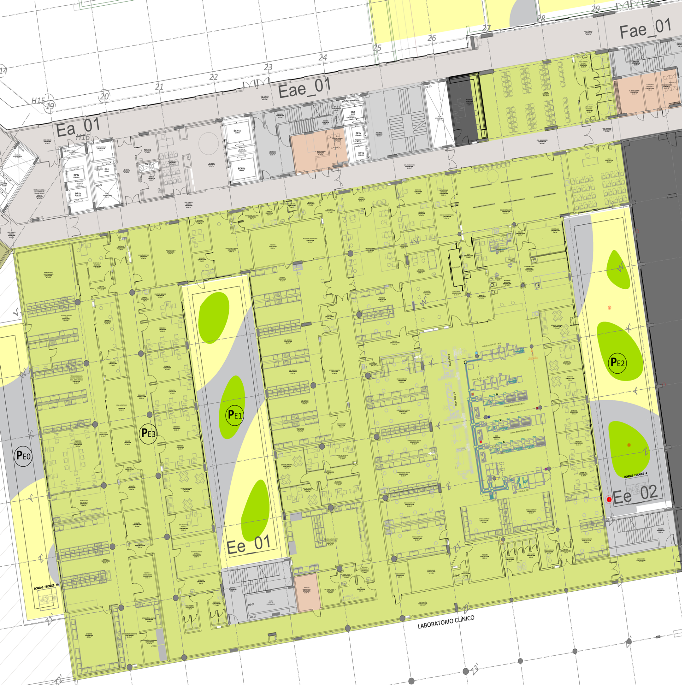

Código para Microsoft Forms
Marque primero un punto en el plano.
El código utiliza coordenadas porcentuales del plano, por lo que conserva la ubicación aunque cambie el tamaño de pantalla.
Amplíe el plano si es necesario y haga clic exactamente en el punto donde se produjo o percibió la incidencia.
